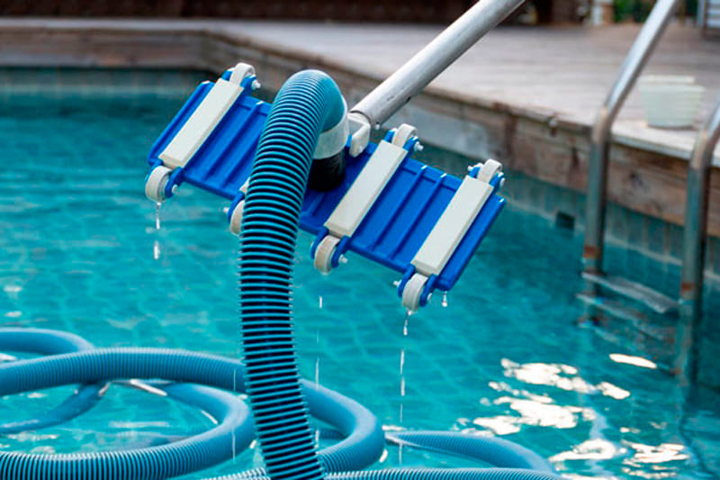
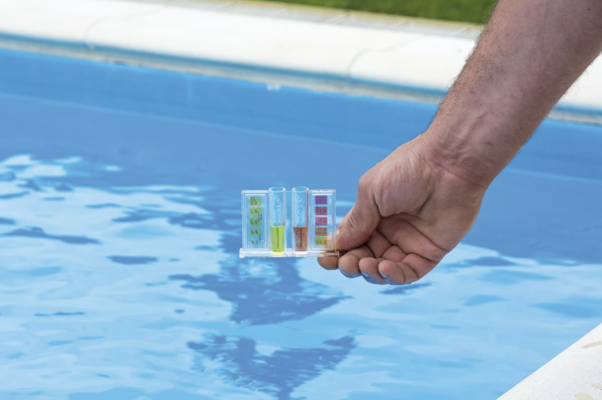
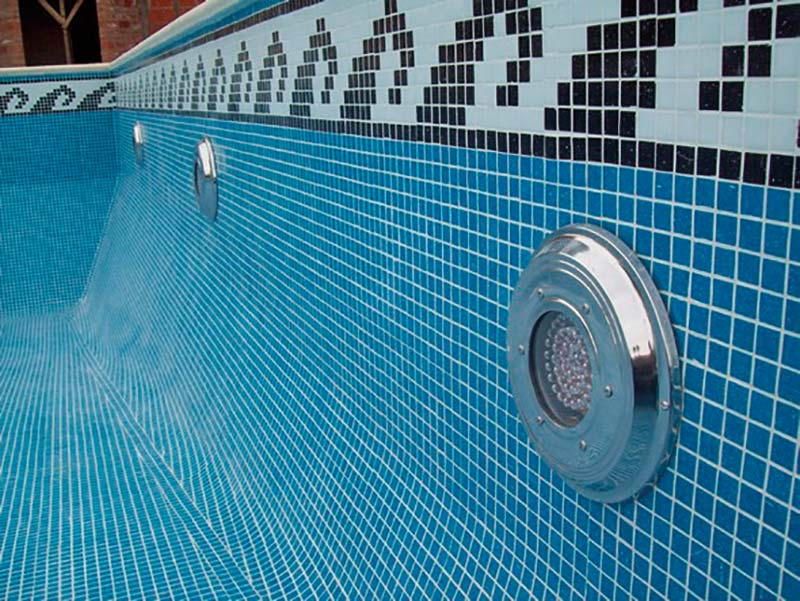
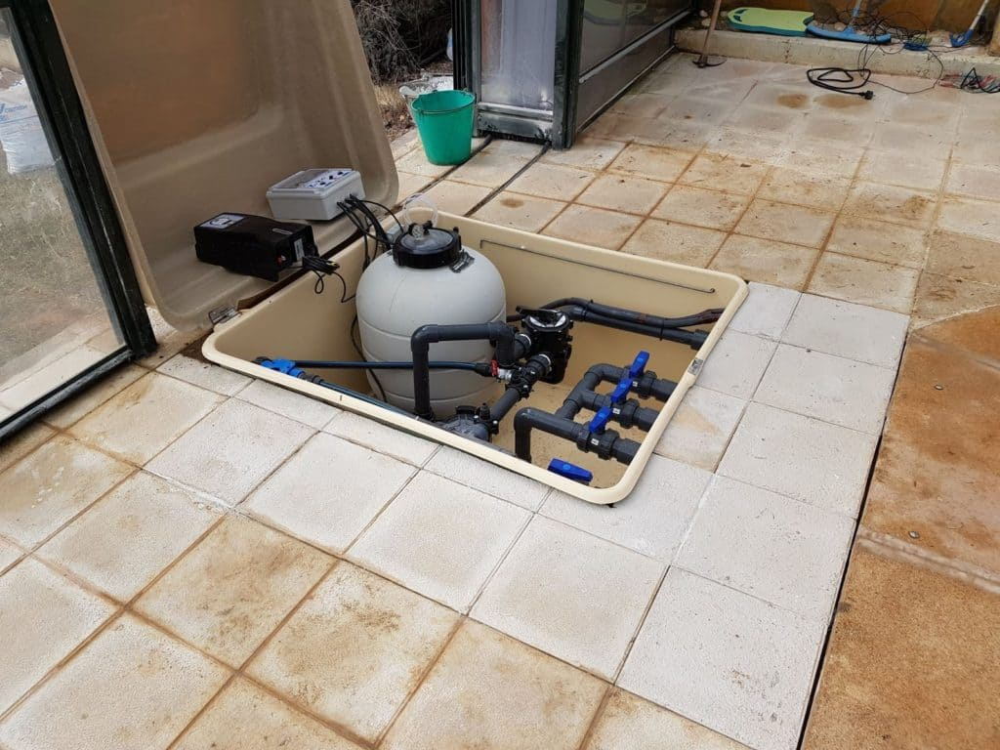

Nuestros trabajos
Limpieza regular
Vaciar cestas de skimmer y bomba, eliminar hojas y escombros de la superficie y el fondo de la piscina.
Tratamiento quimico
Monitorear y ajustar los niveles de cloro, pH y otros productos químicos para mantener el agua limpia y segura.
Limpieza de paredes y baldozas
Limpiar y cepillar las paredes y los azulejos de la piscina para eliminar la acumulación de algas y suciedad.
Mantenimeinto de equipos
Inspeccionar y mantener la bomba, el sistema de filtración, el calentador y otros equipos relacionados con la piscina.
